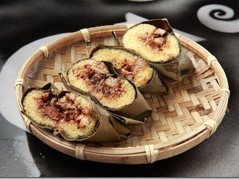

阿拜
台東市卑南族的故鄉，它的傳統早餐自然有卑南風味，也就是──阿拜！是來台東不能錯過的就是原住民風味餐，這個類似漢人慶端午粽子的料理，是傳統原住民族重要節慶、祭儀、喜事時的經典佳餚。
原住民族栽培小米的歷史悠久，小米就是做「阿拜」的材料，傳統的「阿拜」是在豐年祭時，將糯米或小米搗成類似白色的粿粽，壓乾後加入豬肉等內餡，再包覆假酸漿葉及月桃葉變成條塊狀，最後入鍋蒸煮，食用時只要撥除月桃葉就可以了。
在外形上，而「阿拜」的外形看起來則是四方扁平，在配料上，「阿拜」內餡則以南瓜、蝸牛、山豬肉、芋頭心最為傳統。吃起來味道很特別，外層的糯米飯散發一陣葉子香氣，裡頭包著鹹豬肉十分好吃的。
